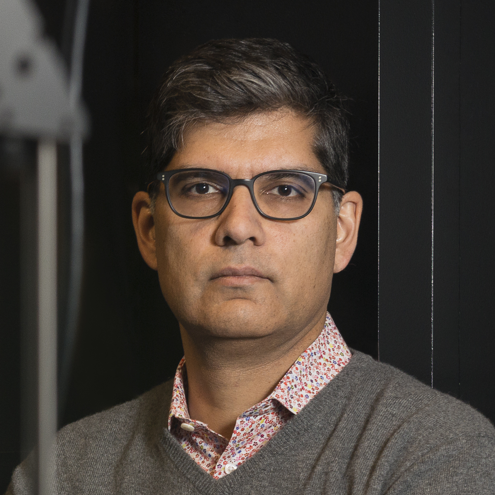
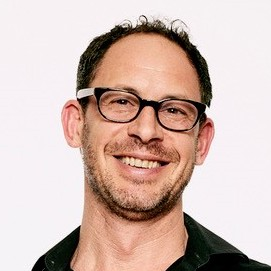
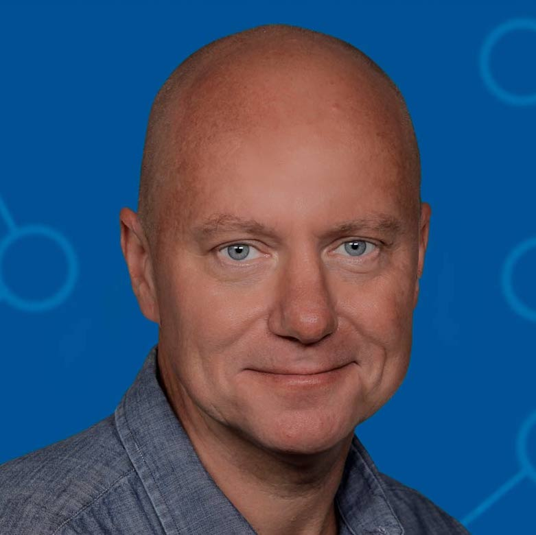
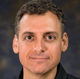
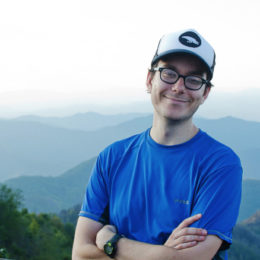
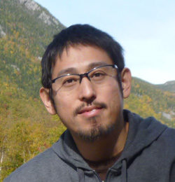
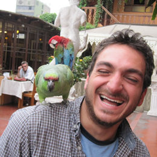

Monell Chemical Senses Center, School of Medicine
University of Pennsylvania
A fundamental problem in neuroscience is mapping the physical properties of a stimulus to perceptual
characteristics. In vision, wavelength translates into color; in audition, frequency translates into pitch.
By contrast, the mapping from chemical structure to olfactory percept is unknown. In other words, there is
not a scientist or perfumer in the world who can view a novel molecular structure and predict how it will
smell. My research goal is to develop a predictive model relating molecular structure and olfactory
perception using a combined psychophysical and molecular approach.

Department of Neurobiolog
Harvard Medical School
The goal of our research is to address a core problem in neurobiology — how is the brain wired to extract
information from the environment and convert that information into action? Our laboratory seeks to answer
this question by studying the mammalian olfactory system, which affords most animals the ability to detect
and appropriately respond to crucial environmental cues. The central hypothesis of our laboratory is that
the neural circuits recruited by ethologically-relevant odors (such as those from food, predators and mates)
are anatomically and genetically stereotyped; we leverage the invariance of this specific type of neural
circuit to understand how odor inputs are detected in the sensory periphery, encoded by patterns of
coordinated activity in the brain, and then decoded to generate meaningful patterns of action.

Department of Neurobiology
Duke University
Kevin first learned about the plasticity of ocular dominance columns as an undergraduate studying Biomedical
Science and Philosophy and has been fascinated about how experience shapes perception ever since. His Ph.D.
work, with Terry Sejnowski at UCSD, involved modeling synaptic transmission and postsynaptic calcium
dynamics. As a postdoc, first with Jeffry Isaacson at UCSD and then with Richard Axel and Steve Siegelbaum
at Columbia, Kevin functionally and anatomically characterized piriform cortex. circuitry. In spite of the
constant ridicule, Kevin continues to enjoy an orange at exactly 5 o’clock every afternoon.

Cold Spring Harbor Laboratory
Alexei Koulakov and colleagues are trying to determine the mathematical rules by which the brain assembles
itself, with particular focus on the formation of sensory circuits such as those involved in visual
perception and olfaction. The visual system of the mouse was chosen for study in part because its
components, in neuroanatomical terms, are well understood. What is not known is how projections are
generated that lead from the eye through the thalamus and into the visual cortex, how an individual’s
experience influences the configuration of the network, and what parameters for the process are set by
genetic factors. Even less is known about the assembly of the neural net within the mouse olfactory system,
which, in the end, enables the individual to distinguish one smell from another with astonishing specificity
and to remember such distinctions over time. These are among the challenges that engage Koulakov and his
team.

Center for Genetic Medicine | Chemistry of Life Processes Institute
Northwestern University
Molecular recognition underlies all biological processes. A fundamental question in biology is how systems,
from individual proteins to organisms, recognize molecular structure. The vertebrate olfactory system is a
remarkable molecular recognition device. Animals can detect odorous chemicals at extremely low
concentrations, and can discriminate among an enormous number of structurally diverse molecules. The
long-term goal of our work is to understand how the nervous system encodes molecular information, and how
neural circuits give rise to learned and innate olfactory-driven behaviors.

David Brann
Graduate Student, Datta Lab
Harvard Medical School, Harvard University

Postdoctoral Fellow, Datta Lab
Harvard Medical School, Harvard University

Postdoctoral Fellow, Datta Lab
Harvard Medical School, Harvard University

Graduate Student, The Franks Lab
Department of Neurobiology, Duke University
Robin is a Neurobiology student who joined the program in 2018. She graduated from Duke University in 2017
with degrees in Biology and Spanish.

Interdisciplinary Neuroscience PhD,
ICON Lab
Arizona State University
Reduced Neuron Model Validation

Graduate Student, The Franks Lab
Department of Neurobiology, Duke University
Shiva is a second-year graduate student in Neurobiology and is studying odor memory, specifically how odors
are accurately and reliably recognized across multiple exposures.

Technician, The Franks Lab
Department of Neurobiology, Duke University
Fernando is from Oaxaca, Mexico and received his undergraduate degree in Psychology from Universidad La
Salle in Mexico.

Research Technician, The Bozza Lab
Northwestern University

Research Technician, The Bozza Lab
Northwestern University

Graduate Student, Fleischmann Lab
Brown University

Max Seppo
Graduate Student, Fleischmann Lab
Brown University

Research Assistant, Fleischmann Lab
Brown University

Software Engineer, Fleischmann Lab
Brown University

Postdoctoral Fellow
Monell Chemical Senses Center

Postdoctoral Fellow
Monell Chemical Senses Center

Computer Science Undergraduate Student, ICON Lab
Arizona State University

Statistics Undergraduate Student, ICON Lab
Arizona State University

Biological Sciences Undergraduate Student, ICON Lab
Arizona State University

Computer Science Undergraduate Student, ICON Lab
Arizona State University